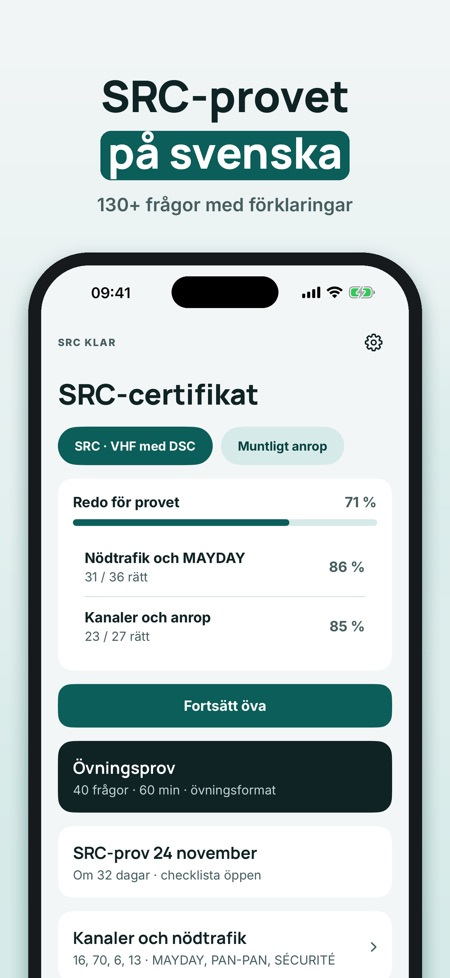
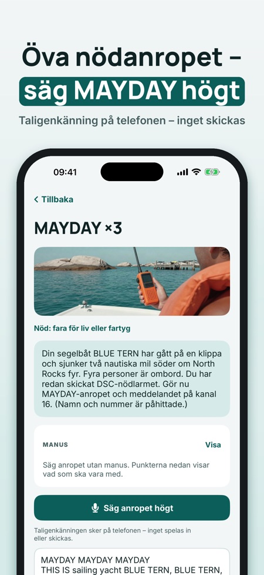
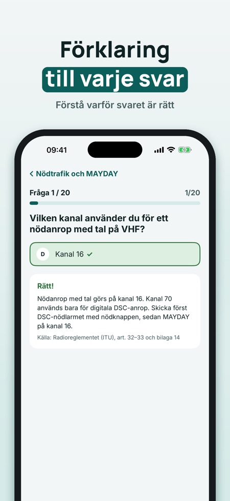

SRC Klar hjälper dig öva inför SRC-certifikatet för VHF med DSC. Du övar anropsprocedurer med rösten.



En app för att öva inför SRC-provet, certifikatet för VHF med DSC.
Ja, MAYDAY, PAN-PAN och SÉCURITÉ går du igenom steg för steg och övar med rösten.
Du kan öva 20 frågor, göra ett helt övningsprov och använda ordlistan och checklistan utan köp.
Nej. Fullversionen är ett engångsköp som låser upp alla frågor, övningsprov och anropsövning med rösten.
Ja, den fungerar utan internet.
Provet gör du hos en kursarrangör. SRC Klar är fristående och inte kopplad till Transportstyrelsen, PTS eller någon provanordnare.
SRC Klar hjälper dig att öva inför SRC-certifikatet för VHF med DSC – med anropsprocedurer som du övar med rösten.
Du kan öva 20 frågor, göra ett helt övningsprov och använda ordlistan och checklistan utan köp. Fullversionen är ett engångsköp som låser upp alla frågor, övningsprov och anropsövning med rösten. Ingen prenumeration.
SRC Klar är fristående och inte kopplad till Transportstyrelsen, PTS eller någon provanordnare. Provet gör du hos en kursarrangör.